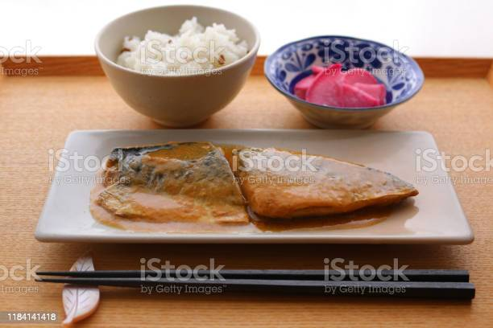

Saba Teshoku Recipe

This recipe is a healthy and easy addition to your cooking arsenal. Preparation is simple and the rewards ample. This is a popular dish in Japan for any meal, breakfast, lunch or dinner.
Ingredients
- Fish
- Rice
- Miso paste
- Oil
- Water
Cooking Steps
- Wash the rice twice in water, then place in rice cooker with equal parts water (1 cup of water per cup of rice), and start the cooker
- Heat up oil in a pan and fry the fish until crispy and brown on both sides and cooked in the middle
- Boil 2/3 cups of water and add a tea sppon of miso paste to it and stir in